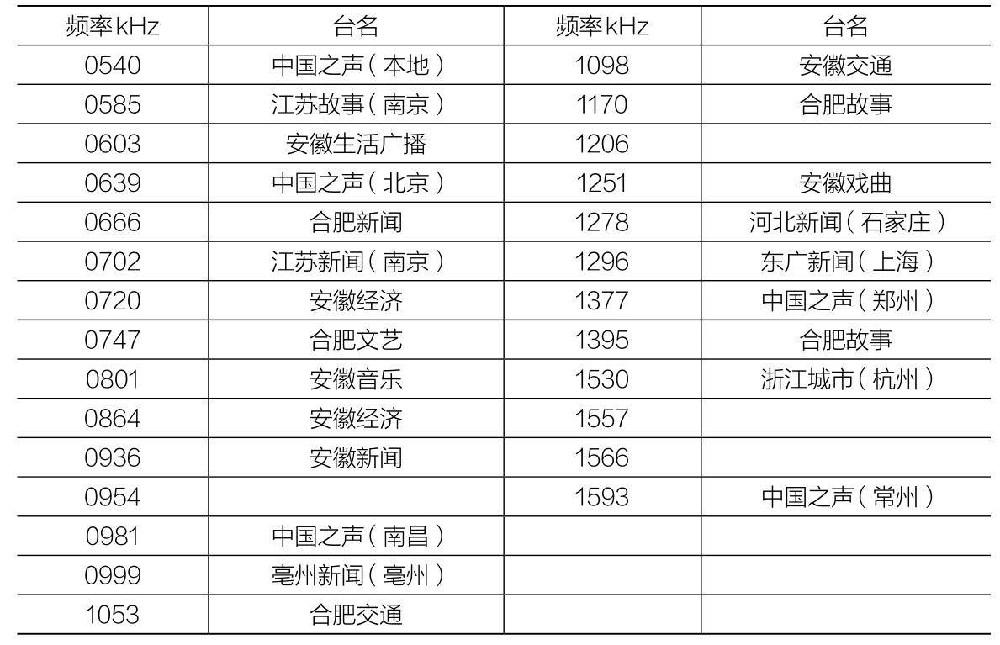
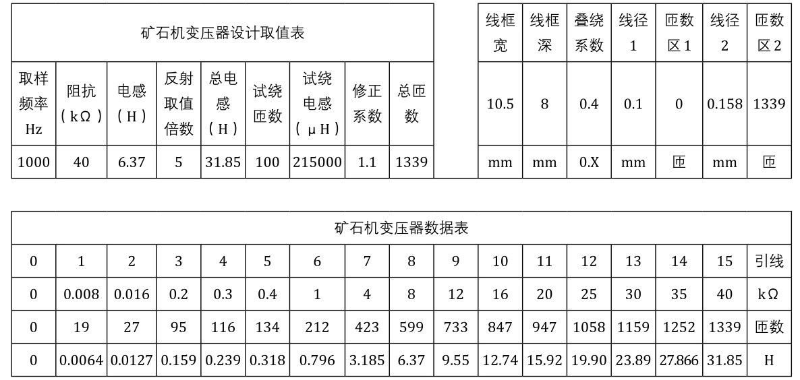

图4-125 亚美复古矿石机
电罗经名叫吴俊东，其矿石机作品的电路和结构并不复杂，他的特色是“一切从头做起”，只要能DIY的东西，全部“自己动手，丰衣足食”。电罗经家中凡木工、钳工、电工、漆工、车工的工具，一应俱全，当然最重要的是他身怀绝技，心灵手巧。他的矿石机从机箱到固定矿石、活动矿石、接线柱、各类标牌（如天地线、耳机、频率调谐等）、线圈，甚至“伞形”可变电容器这样高难度的元件，都是自制的。下面就展示一下电罗经的矿石机作品（见图4-124）。
图4-124 电罗经矿石机作品
1号亚美复古矿石收音机
图4-125所示的这台矿石机除固定电容、调谐旋钮外，所用元器件、机箱，甚至螺丝钉，都是他DIY的。
图4-125 亚美复古矿石机

图4-125 亚美复古矿石机（续）
2号1401-1型复古矿石机
图4-126所示的此机的亮点在DIY的1401-1型活动线圈，该线圈是20世纪60年代通用矿石机线圈，一般用在比较讲究的矿石机上面，现在已经很难找到原装货了。

图4-126 1401-1型复古矿石机
3号花篮线圈复古矿石机
图4-127所示的花篮线圈是古典矿石机常用的原件，它具有占空间小、效率高的优点，但制作起来十分不易。此机元件除旋钮、固定电容外，均自制。

图4-127 花篮线圈复古矿石机

图4-128 圆筒复古矿石机
4号、5号圆筒复古矿石机
图4-128所示的两机机壳为废物利用，系装茶叶的小塑料桶。分别采用伞形和空气介质的可变电容器，自制了仿古小型蜂房线圈。
6号、7号“冰激凌”复古矿石机
图4-129所示是用两种不同的冰激凌盒子改制的矿石机。6号机采用了20世纪60年代初期，大城市中流行的二极管检波，当然，二极管是前苏联的老式二极管，它可以勾起一代人的美好回忆。7号机的重点是自制的固定矿石，这样当年常见的检波器就齐全了。

图4-129
8号仿制63-2型复古矿石机
图4-130所示的此机系仿制20世纪60年代上海仪表电讯技校生产的63-2型矿石机，面板上的那枚月牙形耳机插座，是当年国产矿石机的典型装备，它具有强烈的复古味道。
9号剃须刀复古矿石收音机
在第二次世界大战的战场上，剃须刀片曾经被士兵用来作为检波器，然后接上简单的天地线后收听广播。在后来的爱好者DIY矿石机活动中，它成为必不可少的一个节目（见图4-131）。
图4-130 仿制20世纪60年代上海仪表电讯技校生产的63-2型矿石机
图4-131 电罗经制作的剃须刀检波矿石机
刘俊龙
出于怀旧心理，我设计了这台酷似20世纪50至60年代生产的一种驼峰外形的，有机介质绝缘的，单连可变电容器的矿石机（见图4-132）。

图4-132
它的外形尺寸可根据所选蛛网板的尺寸进行设计，或依据个人喜好进行设计制作。本人设计的这台矿石机最大外形尺寸是：195mm×160mm，该尺寸不包括可变电容器的动片旋出部分。
整体布局采用敞开式结构，两层底板中间放置除蛛网板外的所有零部件。两层底板中间的距离是24mm，也可根据需要进行调整。两层底板用4只30mm×3mm的螺丝进行连接以形成安装空间。安装时，将下层底板拆下，所有零部件都固定在上层底板的下面，这是为了方便以后的修理工作。整体结构如图4-133所示。
本着DIY精神，以提高动手能力为目的，这台矿石机的主要零部件：可变电容器、分线器、蛛网线圈、输出变压器都是自制的。有能力的话，活动矿石也自制更好。如果为了使用时声音大一些，活动矿石也可用2AP9检波二极管替代，效果要好许多，在图4-133所示的活动矿石上面也可看到接了一个检波管。
这台矿石机的单连可变电容器是按比例制作的仿驼峰式单连，比例为3∶1，就是说自制的单连外形是实际单连的3倍，在安装中占有很大的空间，图中可看得很清楚。做成大比例还有一个好处是可以减少动片、定片的数量就可以达到大容量的目的。这个自制的可变电容用了两片动片，一片定片，容量在17～450pF范围变化，这样的参数完全满足频率覆盖的要求。可变电容器的外形如图4-132所示。限于篇幅，本文不做详细介绍。读者可根据自己现有条件自行制作，例如，绝缘材料可以使用医院X光大底片等。
图4-133 整体结构
这台矿石机的两个分线器直接设计安装在上层底板的两侧。利用大帽铜螺丝制作的，或直接加工成平顶螺丝。然后在底板上画好弧线，钻8个孔，一定要钻准确，否则，安装后影响视觉感受。分线器中间的转轴可利用废旧电位器的旋轴改制，在旋轴上安装一个磷铜片制作的旋轴连片。每个大帽螺丝配一个M3焊片做引线连接，至此，分线器就做好了，见图4-134。
图4-134 制作完成的分线器
蛛网线圈骨架用有机玻璃板制作，在有机玻璃板上仔细画好切割线，用钢锯小心、仔细锯下，再加以修整。应准备的工具有50mm小台虎钳、钢锯弓子、什锦组锉、扁嘴钳、各种规格的螺丝刀等。
在蛛网板上绕制线圈时要有耐心、细心才行，绕完后还要加以整理才好看。这台矿石收音机是双回路的，蛛网板的制作尺寸是内径40mm，外径132mm，共有11个齿，每两个齿的距离要适当，上口为10mm，下口为3mm。本制作需要两块蛛网板，一块蛛网板上绕天线线圈，另一块蛛网板上绕调谐线圈。两个线圈的数据如下：L1是天线线圈，用φ0.51mm的漆包线绕45匝，在30匝处抽头。L2是调谐线圈，用同号线绕84匝，每8匝处抽一个头，见图4-135。
图4-135 制作完成
两块蛛网板的调节机构是最不容易制作的，我是用M8×90mm的铜螺栓做的，一头做成直径6mm，长20mm安装旋钮的轴。在两块蛛网板的同一位置钻孔。天线线圈钻直径7mm的孔，然后用M8丝锥攻成M8的孔。调谐线圈钻直径8mm的孔。安装一个大型电位器的固定螺母，把M8的螺栓旋钮轴插进去。螺栓的另一头旋进天线线圈已经套好扣的孔里就可以调节两个线圈的距离了。为了防止天线线圈随意转，必须在调节螺栓的周围安装3个导向轨，以固定住天线线圈的行走方向。3个导向轨兼做天线线圈的3根连线。见图4-136。
当然，每个人都要根据自己的思维来确定调节机构的方法方式，这里只是起个抛砖引玉的作用。
关于输出变压器的制作，我选用截面积为9mm×11mm左右的铁芯。一次绕组用φ0.09mm漆包线绕3800匝，二次用φ0.35mm漆包线绕180匝即可，见图4-137。活动矿石的安装位置及方式见图4-138。

图4-136 制作细节
图4-137 制作好的输出变压器
图4-138 制作活动矿石的安装
这台矿石机的电路选用效率比较高，灵敏度和选择性都不错的电路，见图4-139。

图4-139 蛛网线圈矿石收音机电路图
这个电路的特点是，在距离电台发射地比较近（<10km）的地方使用效果非常好。我家住在距离电台8km（空间直线距离）的地方，使用这个电路，检波用2AP9（把活动矿石的触针拔出一些，使触针离开矿石），用5W号筒式高音扬声器放音，音量可与两管晶体管收音机的音量相当，20～30m2 的房间都能听清楚。我用的是15W椭圆纸盆全频扬声器，口径为230mm×140mm，感觉音量比较柔和、耐听，音量不亚于5W高音扬声器。
元器件的选用：关键是三极管的性能要好，电流放大倍数B在120以上，穿透电流越小越好。我用的是军级3AG14，它的放大倍数为130倍。
检波管用两个正向阻值基本一致的，越小越好，反向阻值越大越好。我选用的正向阻值在200Ω左右，反向阻值在800kΩ以上的检波管。
单连可变电容器可选用空气单连，Q值高些，效果相对好些。
蛛网线圈制作得要精细些，每匝之间的间隙要调整得基本一样，松紧度要紧些，不能有松脱现象。
分线器的动、静触点接触得要可靠，不能似接非接。动触头不能放在两个定触点中间，以免造成短路，影响输出音量。
输出变压器用的双声道插口要选用带一组可通、断接点的，这样可省去一个开关，也可实现高阻输出、低阻输出自动转换。
当活动矿石面对你的时候，左面的分线器是调谐线圈用的，右面的分线器是变换天线耦合电容容量用的，从图中可看出，分线器下面的一排云母电容都是天线耦合用的电容器，当选择不同频率的电台时，就要变换天线耦合电容的容量，才能达到最佳天线匹配。
旋钮和接线柱的选择，应该是有较新的老式产品，这样才有怀旧的感觉，当然，如果找不到老产品就只能用新式的产品了。
各种显示标牌可利用手头现有的，如果没有就只好自己制作了。我是用电脑制作出图片，然后去冲洗出照片来，再去塑封一下就成功了。当然如果能做成铝片的就更理想了。
有些制作是不容易用文字表述非常清楚的，例如，这个驼峰式单连就不好全部介绍清楚，那样是需要长篇文字材料和图纸的，因此只是一个简单介绍而已，希望读者能理解。DIY需要的是发挥自己的想象力，只有这样才能做出更好的作品来。
矿石机很简单，科技含量并不高，但是，要想做成一台质量非常高的、效果非常理想的并不容易，这要靠自己的理论基础、实践基础，靠细心、耐心，还有外部环境是否适合制作矿石机（假如你家的周围方圆150km范围内根本就没有发射台，安装矿石机是没有实用意义的）。
制作安装任何一台矿石机，都不是一成不变的，更不提倡完全照搬。要学会变通应用各种电路形式，各种设计外形。例如，看好了这种外形，但不一定看好这个电路，那么，就可以利用这个外形，选用你看好的电路，使二者搭配，制作出你喜欢的矿石机来，这才是玩矿石机的最高境界。细心的读者应该不难看出，我制作介绍的这台矿石机实际并不是文中介绍的这个电路。它只是个普通的双回路电路形式罢了，在实物图片中看到三极管了吗？看到有两个检波二极管了吗？看到两个5100pF的电容器了吗？看到还有一个电解电容吗？都没有。这台矿石收音机的实际安装电路是下面这个电路图（见图4-140）。目的只有一个，就是建议大家不要完全照搬，要有自己的创意，这样的作品才更有味道。

图4-140 双回路矿石收音机电路图
刘俊龙
这是一台三回路蛛网线圈构成的性能良好的矿石收音机，天线线圈与调谐线圈采用紧耦合形式。另外绕一个检波专用线圈，这样很容易做到调谐电路和检波电路的阻抗匹配。检波采用全波检波电路，以充分发挥矿石收音机的效率，这样既满足对矿石机高灵敏度的要求，同时又具有良好的选择性。电路如图4-141所示。
图4-141 高效率三回路全波检波矿石收音机电路图
从图4-141中可以看出，在同一块蛛网板上绕有两个线圈，一个是L1天线线圈，一个是L2调谐线圈。在调谐线圈L2的绕法上有特殊之处，L2一共绕40匝，在蛛网板上先绕好20匝，不要剪断，再用另一根线紧挨着L2绕15匝作为L1，在L1外面继续绕另一半L2的20匝，这样才完成L1、L2的绕制， 见图4-142。从图4-143中可看出，最里面和最外面发白色的多股线是L2，里面绕了20匝，外面绕了20匝，中间夹着的红色漆包线是15匝的L1。这里为了蛛网线圈的美观，采用了两种线绕制。天线线圈用的是0.56mm的漆包线，调谐线圈采用的是φ0.1mm×36的多股纱包线。当然，调谐线圈也可利用和调谐线圈一样的多股纱包线，效果更好。

图4-142 线圈的绕制
这样的绕法就是所谓的紧耦合绕法，这样做可以减少电磁波的损耗，从而最大限度地利用电磁波的能量。L2调谐线圈和C1可变电容器构成独立的调谐回路，与检波回路分开，避免了调谐回路和检波回路的相互牵制。
检波回路采用了和常见的倍压检波电路有所不同的电路接法。倍压检波需要配合两个小容量的电容进行充放电来完成倍压检波，而全波检波电路不需要两个小容量电容来配合，就能得到正、负两个波形的能量，这是全波检波电路的优势。而倍压检波在不同的频率下需要不同时间常数来配合，这样才能很好地完成倍压任务。而每个电台的频率是不一样的，所以，不同频率的电台其检波效果是不一样的，频率高端的电台检波效果好，频率低端的电台检波效果就不是处于最佳状态。反之，低端好，高端就不是处于最佳状态。而全波检波电路就没有这个问题。
L3是检波回路的绕组，它绕在另一块蛛网板上，通过调整不同的匝数就可以达到和检波二极管（活动矿石）的最佳阻抗配合，从而完全避免了与调谐回路的相互牵制。这是其他检波回路做不到的。
检波管的选用原则：如果以怀旧为主，不经常用来收听，建议选择两个活动矿石。如果还经常用来收听，建议焊接两个检波二极管2AP9，或其他型号检波管，如2AP10、2AK系列，或三极管的e、b结都可，只要满足正向电阻越小越好、反向电阻越大越好的要求即可。最好的处理方法是，在两个活动矿石的固定螺丝上安装两个焊片，在焊片上焊接两个2AP9。平时把活动矿石的调节把手拔出一些，只用二极管进行收听。
现在市面上卖矿石机元器件的极少，很多元器件都得自行制作，尤其是老式元器件，更需要自己制作，搞一些现代化的元器件装上去，就完全失去了怀旧的感觉。这台矿石机的大多数元器件都是自制的，活动矿石、蛛网线圈、单连可变电容器、输出变压器、线圈的调节机构、矿石机底座等都是自制的。
下面主要介绍一下我做的连体全波检波活动矿石的过程及方法。
有时并不是先有了具体的、成熟的思路才有发明创造的，而是突然之间有了灵感，就会有一个新生事物诞生了。这种感觉相信很多人都有过，但大多数都被忽略了、抛弃了……这是十分可惜的事情。我设计制作的这个连体活动矿石就是受到整流桥的启发而突发奇想的。能把4个整流二极管封装在一起而形成一个元器件，就应该能把两个检波二极管制成一体，或者把4个检波二极管封装在一起，形成一个全波检波电路或桥式检波电路。这就是我设计制作这个连体检波活动矿石的基础（见图4-143）。
这样的设计，两个活动矿石只有3根引线，其中有两根线已经连到一起了。如图4-141所示，电路图中正好两个活动矿石有一端的同极性是连在一起的，另一端则分别接到L3的两个端子（注意在倍压检波电路里，两个活动矿石连在一起的不是同名端，而是将非同名端连在一起的），制作的这个连体活动矿石正好符合这个全波检波电路的要求。

图4-143 连体检波器活动矿石
制作的具体尺寸就不介绍了，读者可根据图片随意设计自己的作品，这里只起到抛砖引玉的作用。
这个矿石收音机的底座是使用厚4mm的有机玻璃板制作的，分线器、调谐读盘、蛛网线圈骨架做成一体的，见图4-144。有条件的话，可以用雕刻机机床制作，没有条件的可用手工制作。当然也可不用这样的设计，读者可自行设计其他形式的矿石机底座。

图4-144 矿石收音机底座
天线线圈、调谐线圈与两块蛛网板之间的距离要能调节，读者可根据自己的现有条件和动手能力进行设计制作，简单一些也可，复杂一些也可，总之，能达到调节两个蛛网板距离的目的就行。
这里采用的是一套比较复杂、精密的丝杠调节机构，因为比较复杂，不多作介绍，大家可从图4-145所示细节来进行参考。
图4-145 丝杠调节机构细节
输出变压器可以采用任何小型的铁芯制作，截面积在9～15cm2 都可以。因为线圈内没有直流电流通，所以采用磁性瓷铁芯也可，效果更好。这台矿石收音机就是采用的磁性瓷铁芯，一次绕组用φ0.09mm漆包线绕3500匝，二次用φ0.35mm漆包线绕180匝。配合8～30Ω的扬声器或低阻耳机都能很好地工作。
这里需要注意输出端的双声道插口的接法，正常接地端子是悬空的，两个动触头接输出变压器的两个输出端子，两个静触点也是悬空的。插头接线时要把耳机或扬声器的两根线对应接到相应的端子上。
双声道插座要选用另带一组开关的插座，电路图中“S”就是利用插座上的这个开关。
如果找不到单连可变电容器，可利用双连可变电容器的其中一组。小型密封可变电容器也可利用，这样做除Q值稍低外并没有什么影响。
天线插口、地线插口、可用接线柱接引，也可用香蕉插头接引。本机用的是香蕉插口。
分线器读盘、调谐读盘可另外制作，然后贴在底座的相应位置上。这里的两个读盘数字是直接刻在矿石机底座上的。
底座可用多种材料制作，例如电木板就是很好的选择，而且强度较大，胶合板也可，读者可根据自己现有的材料进行制作。
雷宝玉
本文介绍的这台矿石机是由二极管和MOSFET场效应管3DQ（3SK143-Q）组成的矿石机，通过转换开关可变换成二极管矿石机、场效应管矿石机和再生机。
图4-146 木质红酒盒
一次聚会拿到一个两瓶装的红酒木质盒（见图4-146），我当时就想，用此盒能够装一台矿石机，于是就将其收了起来。一直没有拿定主意装什么形式的矿石机，这事就搁置在一边了。有一阵论坛上讨论磁棒线圈的Q值非常高，使我想前用磁棒线圈制作一部矿石机装到红酒盒中一定不错。在论坛浏览坛友的各种形式的矿石机介绍后，心中有了大致的图形，于是决定制作一部具有组合特点的矿石机，电路如图4-147所示。
本机采用单独的天线线圈L1，是考虑尽量减少天线的分布电容对谐振回路的影响。S1是矿石机和再生机的转换开关，S2是二极管和3DQ检波的转换开关，S3是天线线圈选择开关；S4是耳机匹配变压器高阻端选择开关，S5是耳机匹配变压器低阻端选择开关。B1是由磁棒组成的耦合系统，L1是天线线圈，L2是谐振线圈，L3是3DQ的检波线圈，L4是再生线圈，L5是陷波器，B2是由高导磁率T38磁芯制作的舌簧耳机匹配变压器。

图4-147 二极管、3DQ、再生矿石机电路图
一、各种线圈的数据
（1）磁棒：用两根200mm中短波磁棒并列，再用聚四氟乙烯生料带从头到尾缠紧磁棒，之后穿入用20mL一次性针管做骨架的线圈。
（2）L1天线线圈：采用φ0.04mm×175股的利兹线在20mL一次性针管上绕20圈，每4圈进行一次抽头。
（3）L2谐振线圈：用φ0.04mm×270股利兹线在20mL一次性针管上绕60圈。
（4）L3、3DQ检波线圈：采用φ0.04mm×175股的利兹线在20mL一次性针管上绕3～8圈。
（5）L4再生线圈：采用φ0.04mm×175股的利兹线在20mL一次性针管上绕12圈，线圈中间抽头。
（6）L5陷波器：在直径31mm的NX100磁环上用φ0.04mm×60股利兹线绕60圈。绕前在磁环上缠一层生料带，绕后在线圈上缠一层生料带。
（7）B2舌簧耳机匹配变压器：在导磁率10000的T38镜面磁芯上（100圈的电感量为200mH以上）用φ0.12mm漆包线绕601圈，在39圈、56圈、85圈、120圈、170圈、219圈、269圈、347圈、491圈处进行抽头，然后用φ0.08mm漆包线接着绕到3104圈，并在694圈、850圈、982圈、1202圈、1700圈、2194圈处进行抽头，再用φ0.06mm漆包线继续绕到4390圈，并在3802圈处进行抽头。
二、其他元器件
（1）谐振回路可变电容器：采用军用小八一电台里的三连接收调谐可变电容，只用一连。
（2）陷波器调谐可变电容：365pF塑料密封三连电容，只用一连。
（3）二极管：实际型号未知，检波效果与HP5082-2835、HSMS2820相当。
（4）MOSFET场效应管：3DQ（3SK143-Q），如改用110800会更好。
（5）S1：4×2钮子开关。
（6）S2：2×2钮子开关。
（7）S3、S4、S5：1×12小单刀转换开关。
（8）直流电流表：100μA，再生机时并联分流电阻后量程为5mA。
（9）再生调节电位器：1kΩ线性电位器。
（10）CZ1/CZ2：3.5mm耳机插座。
（11）耳机：美国USI公司的sound power USI-UA1614舌簧耳机元件，直流电阻为65Ω。
（12）矿石收音机面板：家用塑料菜板改制。
三、天地线
天线：四楼南向窗口，垂直窗口甩向距窗口七八米的树上，200m以外没有遮挡物。
地线：接于室内暖气管上。
四、接收条件
接收时间：晚7～8点。
接收地点：北京朝阳区，东南三环外侧。
关闭房间的门窗。用德生PL550收音机比照确定电台的频率，从频率最低端开始到最高端结束，调节矿石机时，收音机要关掉或远离矿石机。
五、接收效果
本接收地点720kHz的信号极强，覆盖频率范围很大，首先用矿石收音机陷波器将此电台屏蔽掉。先将该电台的音量调至最大，然后调节陷波器的可变电容，将该电台的音量调到消失，这时就可以从频率的最低端开始接收电台了。
用二极管进行接收：以能够听清内容为准，先后接收到的电台频率为：558kHz、567kHz、585kHz、603kHz、639kHz、720kHz、747kHz、774kHz、783kHz、828kHz、846kHz、900kHz、909kHz、918kHz、927kHz、972kHz、1008kHz、1026kHz、1053kHz、1071kHz、1125kHz、1143kHz、1188kHz、1278kHz、1377kHz、1386kHz、1440kHz、1512kHz、1566kHz、1593kHz等，总共30个电台，效果非常不错。
用3DQ接收：开始L3的圈数绕了8圈，弱台接收效果非常不好。论坛坛友建议要调整L3的圈数与在磁棒上的位置，当调整L3的圈数，只剩3圈时，音量和灵敏度达到最佳的平衡，与二极管接收的效果十分接近。
再生接收：再生形式的接收较为麻烦，调台时要反复调整再生电位器，不然强台震耳，有时音量会大到失真，弱台也会受到鸟叫的干扰。
总体来讲，二极管接收的效果在接收弱台时的表现要稍好于3DQ，在音量上3DQ要稍好于二极管。
该矿石机如图4-148所示。
图4-148 制作完成的矿石机
六、值得注意的几点
（1）陷波器一定要用高品质元器件制作。做为矿石机中的陷波器，其通带不能宽，一定要尖锐，最好要小于9kHz，不然相邻电台也要被吸收掉。这就要求电感线圈和调谐电容的品质因素Q值要高，不然陷波器的作用就会适得其反。
（2）磁棒上的线圈和调谐电容的品质因数Q值也要高，用利兹线绕线圈和用瓷支架的可变电容是不可或缺的选择。
（3）耳机的选用：除了美国USI舌簧耳机，国产上讯SC2-300舌簧耳机也是非常适合矿石机弱台的接收。
韩红
本机由天线回路、调谐回路、陷波回路3部分，共4个独立单元组成，有两个陷波器，在两个强台中间有一个弱台的情况下使用。陷波器会降低调谐回路的Q值，因此建议尽量不用。
一、天调使用花篮线圈+中短波磁棒（90mm共两支）组合，线圈内径22mm、外径40mm，用φ0.04×270利兹线/76匝，空载Q值1000以上。磁棒放在20mL针筒里，电感量在310～380μH之间可以调整，以对应天线分布电容不同造成的频率覆盖问题。
二、调谐线圈为直径150mm花篮线圈（φ0.04×660利兹线/48匝），电感量347μH，空载Q值达1200以上。
三、检波线圈直径40mm，用φ0.04×270利兹线/60匝。改变其位置可以调整与调谐线圈的耦合量，保障检波管工作在最佳状态。
四、陷波器（1）：直径130mm蛛网线圈，φ0.04×175利兹线/52匝、电感量330μH。
五、陷波器（2）：直径135mm花篮线圈，φ0.04×660利兹线/37匝，电感量290μH。
六、4个可变电容都使用一种瓷动片轴瓷定片支架三连，可以很容易得到所需容量。
七、检波管使用3DQ场效应管，利用其高输入阻抗和低输出阻抗特性配合使用两个串联的SC2－300舌簧电话听筒，可以不用匹配变压器。
实物图如图4-149所示。
收听效果：天线长度4m（三层楼阳台外），地线接在暖气管上，可收到603kHz（北京台“首都生活广播”）、639kHz（中央台“中国之声”）、720kHz（中央台“经济之声”）、747kHz（中央台“文艺之声”）、774kHz（北京台“外语广播”）、828kHz（北京台“外语广播”）、846kHz（中国国际广播电台）、900kHz（中国环球资讯）、927kHz（北京体育广播）、1008kHz（中国国际广播电台）、1026kHz（北京城市管理广播）、1053kHz（中央台“老年之声”）、1098kHz（中国国际广播电台）、1143kHz（中央台“民族之声”）、1251kHz（中国国际广播电台）。
单机尺寸：长250mm×宽150mm×高300mm。
图4-149 制作完成的矿石收音机

图4-149 制作完成的矿石收音机（续）
李清
几年前，国外矿石机爱好者制作了MOS管检波的矿石机，当时用的是ALD110800或是ALD110900这两种零栅压MOS管。麦老师把MOS管检波的矿石机介绍到了国内，由于这两种零栅压MOS管很贵，并且不易买到，于是就有国内的爱好者通过大量试验找寻这两种管子的代替品，功夫不负有心人，终于找到了检波效果很好的耗尽型双栅MOS管3DQ和3DE。
图4-150所示就是当时流行的MOS管检波的矿石机电路图。
图4-150 MOS管检波的矿石机
笔者曾经制作过这个电路的矿石机，使用的各元件如下。
L1、L2：在30mL注射器针筒上用φ0.04mm×270利兹线绕60匝，L2同样在30mL注射器的针筒上用同样的线绕5匝。针筒内插入3只φ10mm×200mm的中短波磁棒。
C1：365pF高频瓷定片支架的高Q值可变电容。
C2：2200pF电容。
双栅MOS管：3DQ（3SK144）。
耳机：阻抗1000Ω的舌簧耳机。
该机做好后效果很好，在位于北京北部远郊区，不用外接天地线，仅凭磁性天线，白天就可以收到639kHz的中国之声，声音还不小呢。有时还能收到另一个弱台，晚上能收到三四个台。南京的网友也制作了相同的机器，在南京市区不用天地线也能收到几个台，可见用MOS管3DQ检波的矿石机性能很好。
仔细研究后发现，这个典型的MOS管检波的矿石机电路还可以改进，改进后灵敏度可以进一步提高。
制约MOS管检波灵敏度的原因分析
如图4-150所示，典型的MOS管检波电路有两个输入端，一端是MOS管的栅极，是检波的控制端，输入阻抗极高，对调谐回路没有太大的影响。另一端是MOS管的源极，是检波的能量获取端，输入阻抗很低，这端通过L2从调谐回路中获取检波的能量，使检波能够输出推动耳机的能量。正是由于这端输入阻抗很低，L2才只能用很少的匝数，并且还要远离调谐回路，以免严重影响调谐回路的Q值。（这一点与晶体管收音机中管子基极与调谐回路耦合时，由于晶体管输入阻抗很低，基极线圈匝数必须很少的道理是完全一样的。）
从下面的试验中就可以看到，匝数已经很少了的L2即使是远离调谐回路仍然对调谐回路有着严重的影响。
测试电路如图4-151所示。
图4-151 测试电路图
此处，L1绕60匝，L2绕5匝，并使用φ0.04mm×270股利兹线，骨架用20mL注射器管，再插入3只φ10mm×200mm中短波磁棒。
高频信号发生器输出639kHz调幅信号到单环天线，调幅参数为1000Hz音频，调幅度30%。单环天线中心到磁棒中心约500mm。使用超高频毫伏表通过2.2pF和12pF电容组成的分压器，测量调谐回路两端的信号电压。
在试验中可看到：
当L1、L2的间距为45mm时，毫伏表测得分压器输出的信号电压是3.4mV。
将L2断开，3DQ源极直接接地，去掉了源极通过L2对调谐回路的影响后，毫伏表测到的信号电压大于7.3mV。
可以计算出断开L2时电容分压器输出的高频电压是有L2时的7.3/3.4=2.15倍，调谐回路的输出电压与有载Q值成正比，所以去掉L2的影响后，调谐回路的有载Q值是原来的2.15倍！因此MOS管源极电路的低输入阻抗通过L2影响调谐回路的有载Q值，是制约灵敏度提高的重要原因。
提高灵敏度的方法及原理
MOS管要正常工作就要通过L2从调谐回路中获取能量，否则检波器将无法工作。我们总是想要检波器输出的能量大些，这就需要L2与调谐回路耦合得紧些，以便能从调谐回路多获取些能量。但是这样做的结果往往适得其反，获取的能量越多，调谐回路的有载Q值越低，调谐回路能提供的能量就越少。因此L2的耦合程度有一个最佳值，达到这一值时检波器输出的能量达到最大值，这时无论耦合变紧或是变松，输出能量都将下降。
那么还有没有办法提高检波器输出的能量了？当然有！这个方法可以提高检波效率，使L2从调谐回路中获取的能量在基本不变的情况下，检波器的输出能量得以提高，从而提高了接收灵敏度。
从MOS管的工作原理中可知，3DQ这种N沟道耗尽型MOS管，在小信号时，如果栅极正电压越高，管子的导电沟道就越宽，沟道电阻就越小。反之，加到栅极的负电压越小，导电沟道就越窄，沟道电阻就越大，直到导电沟道被夹断而消失。
在MOS管检波时，管子的源极与漏极就相当于一只二极管，这只二极管是导通还是截止就要看栅极信号的情况了。当栅极加上正栅压时，导电沟道存在，这就相当于二极管正向导通。反之，当栅极加上负栅压时，导电沟道就减小或消失，这就相当于二极管反向截止。如果正栅压越高，沟道电阻越小就相当于二极管的正向电阻越小，反之负栅压越负导电沟道就越窄直至消失，这就相当于二极管反向电阻越大。我们都知道，二极管正向电阻越小越好，反向电阻越大越好，正反向电阻的差别越大检波的效果越好，检波的效率越高。所以MOS管的栅极信号电压越高，才能在管子导通时得到更小的沟道电阻，在截止时得到更大的沟道电阻，从而得到更好的检波效果，得到更高的检波效率。从前面的测试中我们知道，由于L2从调谐回路中获取能量使调谐回路输出到MOS管栅极的信号电压较低，那么，有没有既不影响L2从调谐回路中获取能量，又能提高加到MOS管栅极的信号电压呢？
办法是有的，其实也很简单，只要再加一个调谐回路单独给MOS管栅极提供信号即可，这个新增加的调谐回路要距原来的调谐回路足够远，避免与原来的调谐回路发生耦合，还要与原来的调谐回路同步调谐，其电路如图4-152所示。

图4-152 高灵敏度MOS管矿石机电路图
增加了MOS管栅极调谐回路后，L2仍从原来的调谐回路获取能量，获取的能量基本上没有多少变化。但是由于没有了L2的影响，栅极从增加的调谐回路中获得的信号电压是原来的两倍多，从而提高了检波的效率使检波其输出能量变大，从而提高了接收灵敏度。
实际制作与收听效果
按照这一电路制作了矿石机，为了避免两个调谐回路发生耦合，两磁棒线圈距离是320mm，中波最短的波长也有180多米，远长于两磁棒线圈之间320mm的距离。因此两磁棒线圈收到的无线电信号的相位差极小，不会影响检波的导通角。
两调谐回路的线圈用φ0.04mm×270股线在30mL注射器管上绕55匝，L2用同样的线绕5匝，每只线圈内插3只φ10mm×200mm中短波磁棒，测量Q值如下：
L3的Q值测量：Q=700。
L1的Q值测量：Q=780。
原打算用图4-153中的那只抽头线圈作L3，后来感到用抽头不方便，实际制作时L3使用的是另一只重新绕制的同样匝数的不抽头的线圈。
为了防止双联等金属器件影响高Q线圈的Q值，两个调谐回路的高Q线圈用有机玻璃棒架高远离金属器件。可变电容是360pF铜片双联。
组装好的矿石机，为了便于统调，微调电容只能安装在有载Q值较低的源极调谐回路上。
两个调谐回路线圈的电感应尽量一致，由于磁棒的导磁率有较大的离散性，故线圈绕好后要测一下电感量，如电感量稍有不同，可调整线圈在磁棒上的位置使之一样，否则要将电感量大的线圈拆掉几圈。统调时先在频率低端收一强台，再调整线圈在磁棒上的位置使声音最大，再找高端的一台，调整微调电容使之声音最大，然后仔细反复进行这两项调整，直至效果最好。如果发现频率的高低端不能兼顾就是双联的两联误差太大，换双联或是通过调整双联动片两边的花片试一试。
统调后，接收灵敏度比原来的MOS管矿石机高了很多，同时用一只大罐头耳机，在昌平，原来的机子白天一般只能收到一个强台，有时还能收到一个弱台，而这台机子白天能收到3个台。晚上效果更好，原来的机子晚上能收到两三个台，这台机子则能收到6个台，晚9点收到了639kHz中国之声、1026kHz北京城市管理台、1251kHz中国国际广播电台、1332kHz的一个台、1548kHz山东的一个电台和1585kHz的一个电台。
更有意思的是另一个接收试验。从电路图中可以看出，如果把L2从L3磁棒上取下套到L1磁棒上就成了典型的MOS管检波矿石机电路，此时调到一个弱台后再旋转机器的方向使弱台听不见了，这时不改变机器的方位再把L2套回L3磁棒上，弱台又能听到了。这就证明了这个电路比典型电路灵敏度高。
关于这个电路以上试验中的良好表现，只是我在北京昌平地区信号弱的环境下试验时的表现，在强信号下这个电路的表现如何我没试验过，也就不得而知了。
电路缺点
这一电路虽然灵敏度很高，电路也很简单，但是存在着一个缺点，就是制作、统调比较难，原因就是调谐回路的有载Q值很高造成的，真是“成也萧何败也萧何”呀！因为调谐回路有载Q值高，才能获得了高灵敏度，但是高有载Q值使得调谐回路谐振点很尖锐，虽然因此选择性也提高了，但是两个调谐回路的接收频率全程范围内达到完全跟踪不太容易做到。谐振参数稍有误差，两个回路的谐振点就不重叠了，如果Q值低，即使两个回路的谐振频率稍有不同，但是通带宽，信号还是能分别通过这两个调谐回路，Q值高通带窄就会发生信号只能通过一个回路而通不过另一个回路的情况，产生这一问题完全取决于双连可变电容的质量，要求双连的两连在调谐的全程的各个角度的容量误差不能太大，否则就很难做到统调。我的360pF铜双连电容共有两只，开始用的是另一只，统调总也做不好，一测才知道那只双连电容的误差太大，有的角度容量差几十皮法，换了这只好多了。
如果统调不好，这个电路的灵敏度反而不如典型的电路，如果两个调谐回路谐振频率相差较远，甚至会收不到信号。制作完成的机器如图4-153所示。
图4-153 制作完成的机器
聂建军
用成品小仪表盒装一台3DQ矿石机/太阳能再生机，小按钮开关做矿石机/再生机功能转换。由于3DQ场效应管是栅极触发，源极漏极夹断检波，在供电状态会产生类似于传统红锌矿的张弛振荡再生放大效果。3DQ场效应管再生起振点低，电转换效能高，在0.4V就能有可用再生，利用台灯光就可以再生收听。配接太阳能充电板、小型镍氢蓄电池，晴朗天充电2h，每天中等音量听音1h可用10天。该机用3DQ双栅分接场效应管电路、中短波短磁棒线圈和介质可变电容，这使得矿石机状态有较好的选择性和中等灵敏度。利用大环或稍短一些的长天线，根据强弱台选择矿石机状态与再生状态转换，中等以上信号可以用矿石机状态接收，弱台用供电再生状态接收有较好的接收效果。
本制作电路图如图4-154所示。
图4-154 3DQ场管矿石机/太阳能再生机电路图
场效应管：3SK143-Q/3DQ；
可变电容C1：360pF （Q=9600），动定片全铜片；
磁棒线圈：φ10mm×70mm中短波磁棒，5mL针管骨架，φ0.04mm×60mm利兹线；
L绕72T（空载Q=485），L2、L3正反绕向各4T，L4绕15T；
G1栅极电阻：33kΩ；
再生电位器：1kΩ；
滤波电容C2：4700pF；
旁路、隔直电容C3：10μF，再生状态用于音频旁路，矿石机状态起隔直作用；
音频变压器T：RM6磁芯、导磁率为5000，
φ0.09mm漆包线总圈数1025T，总线阻75Ω、
300Ω，线阻9.5Ω，总电感5.8H、阻抗区间
3kΩ～2.5kΩ～2kΩ～0.3kΩ～0；
耳机PHONE：SC2-300舌簧耳机；
太阳能充电板：40mm×60mm，5V；
充电电池：镍氢，3.6V/Ah，满充4.21V；
二极管：1SS109；
按钮开关：2×1；
天地线接线柱：小型；
可变电容、电位器旋钮：小型；
机盒：成品仪表盒；
长、宽、高：100mm×66mm×38mm。
图4-154中的场效应管可使用3SK143、3SK144系列双栅场效应管。磁棒线圈用φ10mm×70mm的高Q中短波磁棒，φ0.04mm×60mm股利兹线在5mH针管上绕制，主谐振线圈L的空载Q=485，L2、L3为检波再生线圈，L4为天线耦合线圈。可变电容采用Q=9500的360pF动定片全铜片的介质单连电容。矿石机/再生机转换为2×1小型按钮开关。供电电池用小型3.6V/Ah镍氢电池，由于机箱较小，充电电池不宜过大，过大的铁质电池外壳会对磁棒线圈Q值影响较大，影响接收灵敏度。采用40mm×60mm面积的5V太阳能充电板，阻止反流二极管用低正向导通电压的1SS99，实测阳光充足时相对镍氢电池为+0.79V，对耐过充表现较好的镍氢电池不会造成过充损坏。音频变压器用RM6 5000导磁率小磁芯绕制，配灵敏度较高的SC2-300舌簧耳机。
矿石机接收时，S-1/S-2开关打开，用电位器调音量。再生状态接收时，S-1/S-2开关闭合，调整电位器，选择再生强弱点和控制音量。太阳能电池充电时，S-1/S-2同矿石机状态，开关打开。
制作完成的机器如图4-155所示，制作该机的数据参数如表4-3所示。
收听效果
（1）由于小型机使用短磁棒线圈，矿石机状态灵敏度受限，在北京西郊使用阳台大环天线，可收听到北京地区电台、天津相声台（567kHz）等，其中中国之声电台（639kHz）音量最大。
（2）使用阳台大环天线并启动供电再生装置时，北京地区所有电台、天津相声台都在中等音量以上，晚上天波较好时，可远程接收外地中波电台，最远可至湖北、中国香港等地。
（3）大环天线放置位置与信号强弱关系很大，钢混建筑外四角信号最强。
图4-155 制作完成的收音机
图4-155 制作完成的收音机（续）
表4-3 矿石机变压器设计取值表

马福全
此机不用天地线，能量来自直径0.8m的环形线圈。L1是用φ0.16mm的漆包线自己绞的，共136股，长27m左右。之后用木方做的框架，8个20mL的注射器做线圈支架，每个注射器里插入一段磁棒，共绕9圈，电感136μH做主调，L2是用60股φ0.16mm漆包线自己绞的，绕成直径为120mm的花篮线圈，共49圈，每7匝抽头，做场管3DP的S极线圈，通过鳄鱼夹调节，接入电路，与L1的距离可以调节。大环矿石机在小区3楼一直受FM信号干扰，通过多次试验，在场效应管3DP的D极加入一个线圈L3（在2.5mL的注射器上用φ0.5mm的镀银线绕25圈），才能消除FM干扰，使整个波段变得很干净。可变电容器是222-1军机磁轴双连，每连为15～300pF，其中1连通过开关控制接入电路，收高端电台时用单连，收低端电台时用双连，线路是双栅分接电路，表头使用50μA小表头，高频部分连接线用镀银线，耳机是上讯老版电话听筒SC2-300舌簧耳机（2个串联）。
本机电路图如图4-156所示，制作完成的本机如图4-157所示。

图4-156
收听情况：机器于2012年12月9日制作完成。我居住的位置在黑龙江佳木斯郊区的汤原县，在小区3楼阳台收听，用SC2-300舌簧耳机2个串联收听，白天当地的几个电台都能收到，信号都挺强，由低到高分别是：540kHz中国之声，666kHz佳木斯，900kHz黑龙江新闻， 1143kHz佳木斯经济台，还有几个韩语台和日语台。晚上信号加强了，收到的电台也随之增多了，除了当地的电台，还有许多远地外省的电台和韩语、日语电台，信号都挺强。大致统计了一下，能清晰收听的电台20个以上，弱台很多……机器方向性极强，线圈侧面对着电台时信号最强。要是有干扰，可以通过调整机器方向来避让。
图4-157
黄进武
我做的6号矿石机是无天地线箱式便携中波场管矿石机，有较高的灵敏度，可以外出携带收听。在中波全频段有很轻微的再生音，但收到电台就没有了。耳机线和矿石机在一定的位置就会有再生，3DQ场管G1、G2并接电路也会产生再生效应。
矿石机线圈电容大，做的单回路矿石机选择性不好，所以我做了双回路矿石机，直至做到三回路。三回路矿石机的问题是灵敏度不高，所以笔者曾在双回路和三回路之间徘徊，大名鼎鼎的陈宪文矿石机采用了双回路结构。这种双回路矿石机非常适合爱好者制作，让我想起了小时候在少年宫学习制作140线圈矿石机电路，那是一种怀念双回路矿石机的情结。
6号矿石机于2012年1月制作完成，后来进行场管双栅分接和仿725变压器互耦接法的改进，电路原理图见图4-158。
图4-158 6号矿石机电路图
6号矿石机电路为双回路双调谐场效应管矿石机电路，机壳用电性能好的聚丙烯PP材料做成，线圈用接收效果好的φ0.04mm×660多股纱包线，保证无天地线接收的灵敏度。采用场效应管双栅极分接方式，将场效应管G1栅极串接39kΩ电阻后接S源极，与G1、G2双栅并接比较，灵敏度和选择性大增，在白天多收了江苏台和镇江台。
接收效果
我做了几台矿石机，6号矿石机的无天地线远距离接收效果最好。我白天远距离收听、测试，晚上进行天波接收效果比对。在江苏常州西郊2楼，白天能收到的远程中波电台有：
702kHz江苏台，声音很小，常州至南京150km。
1008kHz无锡台，声音可以听清，常州西郊至无锡50km。
1221kHz镇江台，声音小，常州至镇江70km。
制作材料
机壳：聚丙烯PP材料做的便携箱，长44cm×宽30cm×高16.5cm；
线圈：L1-φ0.04mm×660股、双股19圈，L2-φ0.04mm×660股、双股18圈，L3-φ0.04×660股、三股3.5圈，长18.5cm、宽12.5cm；
可变电容：南京产韶山牌2×270pF薄膜介质可变电容，动定片全铜材料；
场效应管：型号3SK143-Q/3DQ双栅场效应管，G1、G2双栅分接；
半可调电容：5/20pF瓷介半可调电容；
滤波电容：2200pF；
矿石机音频阻抗变压器：YYDZ仿725型，采用双线圈耦合隔直接法，在耳机端用毫伏表测量不隔离直流8mV，隔直接法10mV；
耳机：上海电讯器材厂SC2-300舌簧耳机，进行了去调节簧增音改造，感觉改造后的SC2-300耳机效果非常接近田737高级舌簧耳机。
制作完成的矿石机如图4-159所示。

图4-159 制作完成的矿石机

图4-159 制作完成的矿石机（续）
韩红
磁棒具有较强的导磁能力，它能聚集空中的无线电波，在线圈中感应出信号电压。本机用4支200mm中波磁棒组成140mm×200mm小框，不用天地线，即可以收到6个台。在设计中可以接上天、地线，以增加收台数量。整机电路图如图4-160所示。

图4-160 整机电路图
整机用直径16mm的PVC塑料管制成，价格低廉又能保护磁棒和线圈。线圈用φ0.04mm×60股利兹线平绕65匝，每个线圈调到380μH然后固定，线圈要涂蜡做防潮处理。线圈两两并联，然后再串联，电感量310μH。配270pF可变电容，电路选用双栅场效应管3DQ检波，L9绕在其中一支磁棒上共10匝，耳机用2只SC2-300串联而成，阻抗为600Ω。如果用高阻耳机收听，则要用二极管检波，方法是拆去3DQ，在G1和D的位置处装上二极管， L9此时无用，可不绕。
制作过程以及完成的整机如图4-161所示。

图4-161 制作过程
韩红
这是一台花篮线圈便携式矿石机，设计目地是在户外使用。该机主要有以下几个特点：
（1）为了保证本机性能，本机天线回路、调谐回路及吸收回路都使用高Q值线圈。
（2）调谐回路使用直径达150mm（6英寸）花篮线圈，为了方便携带，采用可拆卸方式。
（3）通过开关转换，可选择场效应管和肖特基管检波，还可以方便地更换矿石或二极管来检验其检波效果，另外，选用了国外戴夫先生的检波电路及国内陈宪文先生的检波电路，以适应在不同的环境下使用。
（4）天线调谐回路线圈采用抽头方式，分为“高端”和“低端”两个挡位，以适应各种天线，使之做到中波全覆盖。
（5）本机采用双回路双调谐电路和可移动的陷波器，以避免在不用陷波器时对调谐电路的影响。
整机电路图如图4-162所示。

图4-162 本机电路图
下面分别介绍本机的制作要点。
（1）如图4-163所示，本机的调谐线圈L2用φ0.04mm×660股利兹线绕40匝，直径150mm，电感量254μH，空载Q值在800kHz时为1136。线圈装在一个有机玻璃支架上。
图4-163
（2）如图4-164所示，天线线圈L1a、L1b用φ0.04mm×270股利兹线绕30+12匝，外径38mm，内径21mm，配两支65mm中短波磁棒，电感量42匝/163μH，30匝/85μH/Q=950。调整与主振线圈距离可改变耦合量。
（3）如图4-165所示，检波输出线圈L3为场效应管专用，线径及外形同L1，圈数50匝，电感量38μH。通过改变与主振线圈距离来调整输出量。
（4）如图4-166所示，陷波器振荡线圈L4与L1相同，圈数60匝，与两支70mm中短波磁棒组成，电感量250μH，Q值为980。配365pF可变电容。通过调整与主振线圈距离可以改变吸收量。
（5）如图4-167所示，天调可变电容是340pF等容三连，将其中一连拆片至200pF。
（6）如图4-168所示，主调谐可变电容使用一种钢质瓷支架宽片距产品，在中波段Q值较高，容量为12～365pF。
图4-164
图4-165

图4-166

图4-167
（7）如图4-169所示，吸收回路用“复旦”小型空气可变电容，体积为25mm× 25mm×35mm，容量为12～365pF。

图4-168

图4-169
（8）如图4-170所示，活动矿石架设计成可拆卸形式，可方便更换矿石及触针，也可更换各种二极管。
（9）如图4-171所示，上盖板由2.4mm黑色有机玻璃和8mm厚聚丙烯板组合而成。
（10）如图4-172所示，天线调谐和检波调谐都使用了熊猫减速旋钮。
图4-170
图4-171
图4-172
（11）如图4-173所示，电路有5种检波方式。
图4-173
（12）如图4-174所示，机箱采用市面上销售的成品，更换合页后，机盖可以与机箱分离。在里面打出隔层，用于存放调谐线圈。整机体积为40mm（长）×25mm（宽）×25mm（高）。

图4-174
（13）机器内部装配图如图4-175所示。
（14）机器在收起时状态如图4-176所示。

图4-175

图4-176
（15）机器在使用时状态如图4-177所示。

图4-177
（16）活动矿石和外接二极管在工作时情况如图4-178所示。
图4-178
（17）本机实际接收效果良好，天线架在三层楼阳台外长约4m，地线接在暖气管道上，白天可收到：
1）603kHz 北京台《首都生活》
2）639kHz 中央台《中国之声》
3）720kHz 中央台《经济之声》
4）747kHz 中央台《文艺之声》
5）774kHz 北京台《外语广播》
6）828kHz 北京台《北京新闻》
7）846kHz 中国国际广播电台
8）900kHz 中国环球资讯
9）927kHz 北京体育广播
10）1026kHz 北京城市管理广播
11）1143kHz 中央台《民族之声》
12）1251kHz 中国国际广播电台
到了晚上还可收到：
1）1008kHz 中国国际广播电台
2）1053kHz 中央台《老年之声》
3）1098kHz 中央台《藏语频率》
4）1278kHz 河北新闻台
5）1377kHz 中央台《中国之声》
6）1422kHz 太原新闻台
7）1548kHz 山东台
8）1593kHz 中央台《中国之声》
（18）在户外收听时，有时会出现较大的噪声干扰，如公路旁、小溪边，或有风的树林里，这时就需要有一副降噪耳机。为该机配套的是用“克拉克”耳机改造的一副耳机（见图4-179），原配的低阻动圈耳机灵敏度较低，不适合矿石机使用，改造的耳机换装SC2-300“舌簧”电话听筒，两只串联阻抗为600Ω。

图4-179
雷宝玉
有幸从朋友处得到了几个R40C1型磁环，磁环的导磁率为40，工作频率为50MHz，有朋友测得它用利兹线绕的调谐线圈Q值过千。磁环体积小，手里有现成的塑料小盒，用它做个用3DQ检波、输出阻抗与低阻舌簧耳机匹配、不用匹配变压器直接带动耳机的中短波小型矿石机。
1.矿石收音机线路图
如图4-180所示，该电路图采用标准的3DQ检波线路，用2×2开关进行中、短波转换，线路简单，利于制作。由于在我的住处，央广720kHz“乡村之声”电台200W的发射功率对其他电台的干扰很大，为此在天线回路中加入了LC并联回路组成的陷波器，来消弱720kHz对其他电台的干扰。在陷波器两端并联一个短路开关，在收听短波和中波没有强台干扰时，将陷波器短路，以减少陷波器对天线信号的影响。
图4-180 电路图
2.元器件选择
（1）磁环：主调线圈选用北京森力电子技术有限公司（798厂）生产的镍锌R40C1高Q磁环，导磁率为40，工作频率为50MHz。中波磁环规格为外径37mm×内径23mm×高15mm，短波磁环规格为37mm×23mm×7mm。经测试，R40C1磁环用270股利兹线在整个中波频段的Q值都上千，短波10MHz时Q值在600左右。陷波器线圈选用北京森力电子技术有限公司（798厂）生产的导磁率为100的镍锌磁环，规格为外径31mm×内径18mm×高7mm，它也是一种Q值在500～600的高Q值磁环。
（2）利兹线：主调、天线、3DQ检波线圈采用性价比较高的φ0.04mm×175股线，如用φ0.04 mm×270股以上线，磁环绕不下；陷波器线圈采用φ0.04 mm×60股线。
主调可变电容：受矿石机体型的限制，该机采用2×340pF+2×25pF（4×14pF微调）四连塑料薄膜可变电容，四连并联用于中波，2×25pF并联用于短波。
（3）线圈：中波主调线圈绕37圈，电感量为115μH；天线线圈绕12圈，每2圈一个抽头；3DQ检波线圈绕3～4圈。陷波器线圈绕47圈，电感量为177μH。短波主调线圈用直径1mm的镀银绕23圈，电感量为14μH，接收频率范围为6～18MHz；3DQ检波线圈绕2～3圈；天线线圈绕2～4圈。
（4）耳机：美国RCA公司的 “Big Cans”，俗称“大罐头”（见图4-181），加了抗噪耳罩。

图4-181 美国RCA公司的 “Big Cans”耳机
（5）检波元件：3SK143-Q（3DQ），插针、插母连接。
（6）开关：S1天线用1×12单刀开关，S2为短路陷波器的微型拨码开关，S3波段用小型2×2开关。
（7）其他：塑料小盒、天地线接线柱、耳机插座、旋钮、磁微调电容等。图4-182所示为矿石机盒以及元器件。
图4-182 矿石收音机盒以及元器件
（8）天线：北京华威桥附近，4楼南窗，向窗外树上抛八九米细塑料多股线。
（9）地线：房间暖气管。
3.布局安装
由于小型矿石收音机机壳小，因此左手位安装陷波器可变电容，右手位安装调谐可变电容。可变电容用双面不干胶贴固定，磁环和开关用热熔胶固定。3DQ焊在覆铜板上和插针焊在一起，用插母连接，在线路中方便插拔、更换，耳机插座在右侧下部位置。中短波调谐线圈叠在一起。整体布局见图4-183。

图4-183 布局
4.调试
本机元器件不多，只有中波频率覆盖范围要进行简单的调试。因为调谐线圈用的是磁环，所以覆盖频率范围要在安装之前进行，将矿石机临时连线后，先在频率低端找到一个电台，比如567kHz，适当增减线圈的圈数，使频率度盘达到相应的位置，再在频率高端找到一个电台，比如1521kHz，调整微调电容，使频率度盘达到相应的位置，调试就完成了。
5.几个要点
（1）要加入陷波器，首先想到的是LC并联谐振电路，其特点是谐振时对谐振频率的阻抗最大，对其他频率的阻抗很小，利用这一特点将其串联在天线回路中，将谐振点调在需要屏蔽的频率点就可以对其进行有效的衰减，从而减小对相邻电台的干扰。 不过这个LC并联谐振电路的带宽最好在9kHz以内，防止相邻的电台也被阻止，也就是说电感和电容的Q值不能太低。因为是小型机，元件体积不能大，要尽量小，就选用导磁率为100、外径31mm的磁环，用φ0.04mm×60的利兹线绕到175μH，Q值在500～600，配塑料2×270的双联并联使用。
（2）陷波器的使用：先将陷波器的电容调到最大或最小，然后将调台电容调到需要屏蔽的频率上，这时再调整陷波器电容，使需要屏蔽的频率音量减到适当的大小即可。当接收弱台音量较小时，可适当地微量调整陷波器电容进行辅助调谐，就能够收到较好的接收效果。
（3）为了保持磁环线圈Q值的稳定，磁环在绕制线圈之前要用蜂蜡煮一下，将磁环体之内的潮气驱除。
（4）绕中波天线线圈时，要垫入一小条聚四氟乙烯薄板，将抽头处绕在薄板上，不抽头处绕在薄板下。抽头局部如图4-184所示。
图4-184 抽头局部
（5）磁环要用热熔胶固定，对Q值的影响很小。
（6）如没有高灵敏度耳机，也可用老版SC2-300耳机，将其原线圈拆掉，用外径0.1mm的漆包线绕1300匝后替代，灵敏度与“大罐头”相比，只在极弱的信号下有差距。
（7）耳机两端并联的电容是不可或缺的，它在3DQ检波的情况下起到了至关重要的作用。如果没有这个电容，这台矿石收音机有混台现象，远程弱台收不到，加了这个电容后，选择性和灵敏度有较大的提升，音量也有所增加。这个电容的容量在几百皮法到几千皮法之间均可，也可在装机时进行筛选而定，本人用的是4700pF的独石电容。
（8）3DQ中、短波检波线圈的具体圈数要根据接收的天线情况和地理位置而定，在临时搭接试验时进行调整为好，不同的条件也可能是2圈或5圈，或其他圈数，这要由试验来定。
（9）焊接利兹线时，不需要进行去漆处理，用烙铁配合松香直接上锡即可。
该机的内部及外观见图4-185。
6.接收效果
接收地点：北京东三环路华威桥附近。
中波：接收时段为清晨、上午、下午、晚间等不同时段。高低端接收到的频率为558～1593kHz，低段频率分割距离较开，高段频率距离很近。在不同时段确认的电台有：央广、北京、天津、廊坊、涿州、河北、河南、郑州、南京、山东、济南等，还有些收到的电台没能确认台标。收到的电台通过德生PL550收音机确认频率是：558kHz、567kHz（天津）、585kHz（廊坊）、603kHz（北京、郑州）、639kHz、720kHz、747kHz、774kHz、783kHz（河北）、846kHz、900kHz、909kHz（天津）、927kHz、972kHz、1008kHz、1026kHz、1053kHz、1098kHz、1125kHz、1143kHz、1206kHz（南京）、1251kHz、1278kHz、1332kHz、1359kHz、1377kHz、1386kHz（天津）、1431kHz、1449kHz、1476kHz、1530kHz、1566kHz、1593kHz。还有801kHz涿州台，音量很小，听得不清。
曾有两三个电台在同一频率发声的现象，开始时笔者以为是混台，后来经德生PL550接收对比发现，是不同地点的电台使用相同频率造成的。比如，603kHz平常是北京故事台，当它停播后是郑州台播音。因为矿石收音机在高段接收信号较弱，各电台的音量相差不大，这种现象在高段较多。
短波：接收时段为晚上8～9点。满刻度都有电台，短波接收到的电台音量较大的有中广中文台，韩语、日语广播等。音量小的电台很多，但常常是飘忽不定的，一个频率位置最多时有3个电台“飘来飘去”。
这中、短波磁环小矿石机的接收性能有不错的表现，主要有如下原因：R40C1磁环Q值高，电台分割清楚；φ0.04mm×175利兹线性能好，粗细合适；3DQ的输出阻抗和耳机阻抗匹配。如果制作成台式矿石收音机，并将塑料薄膜可变电容换成高Q值的空气可变电容，接收效果还会有较大的提升。
以上只是本人的主观感受，有兴趣的矿石机爱好者不妨也组装试试，我想一定会带给您带来不小的惊喜。
图4-185 组装完成的整机
马福全
此机不用天地线，靠自身的天线就能接收短波段信号。理论上，接收频率范围为1.99～20.46MHz，用电感表测得1圈电感为2.42μH，3圈电感为14.56μH，配合25～440pF可变电容，曾减小线圈，收到了1566kHz电台信号。
本机电路如图4-186所示。
图4-186 短波大环矿石收音机电路
机器所用元器件：
天线是直径为8mm，长为9m的紫铜管，弯成3圈成弹簧状，直径为0.85m，通过接线柱调节接入机器；L2线圈用截面积为6mm2 、1.5m长铜线绕4圈，直径为110mm，通过纯铜鳄鱼夹调节接入；可变电容器采用磁轴镀金可变电容器25～440pF，检波采用场效应管3SK143系列的3DP，线路是双栅分接电路，表头是50μA小表头，高频部分连接线用镀银线，耳机是上讯老版电话用SC2-300舌簧耳机，采用2个串联的形式。
制作完成的整机如图4-187所示。
收听情况：
我居住的位置在黑龙江佳木斯郊区的汤原县，在小区3楼阳台收听，用SC2-300舌簧耳机（2个串联）收听， 白天能收到微弱的几个台，夜晚降临，机器收台多了起来，信号也随之加强，频率范围在3～12MHz，夜晚这些台的信号都挺强。在平房收听没有干扰，在小区3楼有FM干扰，无法消除（我这里距FM发射塔太近了，有1km左右），好在当收到短波信号时能够压制住FM干扰，不影响收听使用。
图4-187 制作完成的矿石收音机
翟希文
近年来，用简单的矿石收音机进行远程接收成为很多无线电爱好者研究的热点。为了达成这个目的，我也和大家一样，开始为矿石收音机远程接收准备条件。
接收环境
我家地处安徽中部，串波电台很多，普通晶体管收音机在室外随手就能收到十七八个，当然在钢筋混凝土结构的楼房室内就只能收到四五个本地强台了。这些电台信号强度相差很大，有些电台信号强大到在普通双回路双调谐矿石收音机中，表现出频率相差100kHz的电台都淹没掉。因此，提高选择性又不过分降低灵敏度是个很重要的问题，能否解决这个问题将直接关系到这次远程接收矿石收音机实验能否获得成功！
我家位于合肥市区偏西南的位置，周围高层建筑较多，但距离我的位置相对较远，中波波段接收条件算是中等偏上，根据这个条件有目的地设计矿石收音机，有可能获得很好的效果。
设计要点
要实现远程接收，最基本的要求首先是架设良好的天地线，使得从遥远空中传来的微弱电台信号成为可能；其次，接收使用的矿石收音机本身必须具有良好的选择性，否则本地的强台信号会将临近频率的弱信号全部压制而无法收听；再次，用于远程接收的矿石收音机本身的损耗应该越小越好，免得本来就非常微弱的信号在传输、检波过程中被消耗掉。最后则是使用一个高效率的耳机来将检波后的电信号还原成声波，供耳朵聆听。
电路结构设计
从天线中送来的信号中，本地强台很强，高选择性是在远程接收最重要的因素。一般情况下，提高选择性都是以牺牲灵敏度为代价的。怎么样既能大幅度提高选择性，而尽可能少地降低信号传输时的损失来兼顾二者呢？这就是本次实验的难点。
提高选择性的途径：
（1）提高谐振电路的品质因数：实现途径是采用高品质的线材和骨架绕制电感线圈，采用高品质的可变电容器。
（2）减轻谐振电路的负载：传统矿石收音机一般使用阻抗在1000～4000Ω的电磁耳机来还原声音，相当于给谐振电路加上很重的负载，让谐振电路的有载Q值大大降低。这里我们使用阻抗高达150MΩ的超高阻高效率舌簧耳机，有效地减轻了检波器的负载，使得谐振电路的有载品质因数得以提高。
（3）增加谐振电路数量：为了获得更窄的通带和更尖锐的谐振特性，将强信号掩盖的弱信号检出而又不过分增加插入损耗，在这里我选择了双调谐谐振电路。这是一个折中的方案，适当兼顾灵敏度和选择性两方面的需要。
（4）使用变耦合度的调谐电路：双调谐电路存在着随信号增强和耦合度增加会出现双峰效应的问题，信号越强或者耦合越紧，这个问题越显著。变耦合度方式可以有效地解决这个问题。（5）设置陷波器：由于我所在的接收位置不到10km外有功率200kW的中波电台，仅仅依靠上面的双调谐电路并不能将它们发出的强大信号掩盖下的弱台信号检出，因此高品质的陷波器就是一个必不可少的装置了。
经过一些测试实验后，最终的电路变成了如图4-188所示的样子。
图4-188 高选择性矿石收音机原理图
这个电路由输入调谐回路、输出调谐回路、陷波器、检波器、班尼电路、音频阻抗变换等部分组成。
输入调谐回路由2×440pF可变电容器的1/2、天线耦合线圈L1、输入调谐线圈L2（这两个线圈套在插入一根80mm长磁棒的同一线圈管上）构成，配有5/25pF的补偿微调电容。
输出调谐回路由另1/2个2×440pF可变电容器、输出调谐线圈L3、输出耦合线圈L4（L3和L4也是插有长80mm磁棒的同轴线圈）以及5/25pF微调电容构成。
陷波器由一个高Q线圈L5和一个最大容量为290pF的空气介质可变电容器构成。
检波用一个HP5082-2835的晶体二极管完成，这是一种Rd 值很高的二极管，我用交流阻抗140kΩ的舌簧耳机仍不能满足匹配，后来因此而特别加装了阻抗变换器来尽量满足这个要求。
因为输出阻抗很高，滤除检波后的载波用一个容量仅39pF的电容完成。
班尼电路提供了一个高阻抗的检波器直流通路，音频信号则通过并联在1MΩ可变电阻上的0.1μF电容直接送往超高阻耳机，或是音频阻抗变换器去驱动低阻耳机。
因为要尽量降低调谐电路的负载，因此我选用了阻抗高达140kΩ的舌簧耳机。
在这个实验中，耳机阻抗匹配变压器没有画进去，但实际上是存在的，可以从实物图上看见，通过一个分线开关选择阻抗，也可以通过直通开关将之抛开，让信号直通耳机。
天地线的架设
一个秋高气爽的周日，我和朋友爬上6楼楼顶，利用楼顶原有的两根相距15m、各高15m的CATV（电视共用天线）铁杆为基础，用普通的电话镀铜铁线架设了总长度约60m的天线。彻底淘汰了之前从3楼窗户扔出去的5m长的垂线，完成了远程接收最基础也是最困难的部分。
天线是架设在两根相距15m、本体具有良好接地并装有避雷针的CATV天线铁架上，距离楼顶高度最高点大约3m（平均高度约1.7m），天线铁架高度约15m或者更多，因此这个天线处于避雷针保护角之内，正常情况下毫无问题。
天线的材料是铁质镀铜的电话线（这是个无奈的选择，因为稍粗的铜线就有可能会被人盗割），采用双线并联方式。从天线中间下行到我工作台的信号线直流电阻为1.5Ω，还不算太垃圾，至少比用铜线便宜得多！地线比较简单，就是一条普通的塑皮铜线接在一条很粗但已经废弃的自来水铁管上。
天线示意图如图4-189所示。天线概貌（因为周围环境关系无法找到合适的位置拍摄全幅图片）如图4-190所示。
图4-189 天线示意图

图4-190 天线概貌
天线中部挂在CATV天线杆距根部约3m处，两端用绝缘子和楼房东西两边的地网相连，高度降低到0.35m。天线局部图如图4-191所示。
图4-191 天线局部图
元器件的选择和整机装配制作
（1）电感线圈：这台机器的几个谐振电感都工作在同一频段，考虑到对品质因数的要求、安装和加工的难度等方面，最后我选择了统一的规格。3个线圈管都用10mL的一次性注射器外管，截去注射针端约2mm一段，使之可以插入直径10mm的MX-400磁棒，磁棒长度为80mm。为获得足够的Q值，选用中波段性能最好的φ0.04mm×60利兹线（单股线径φ0.04mm的漆包线绞合成的利兹线的中波段性能最好）。具体参数如下。
先在线圈管上单层平绕73T作为L2，然后再上面加一个略大的线圈管，再绕4～6T作为L1（具体圈数可以根据需要调整）；L3的绕法、圈数和L2完全相同，在L3外面用一个略大的的线圈管绕30圈作为L4；L5的绕法和L2、L3相同，圈数是80T。这5个线圈引线长度都预留20cm，用少量蜂蜡固定线头。蜂蜡对线圈的Q影响很小，但还是不要大面积涂抹在线圈上。
（2）可变电容器：为了获得尽可能高的Q值，主调谐可变电容器选用了拆自某仪器中的2×440pF空气介质可变电容器。定片绝缘子使用高频瓷，转动结构和动片弹性连接引线也做得十分可靠，为获得高品质因数的谐振回路提供了很好的条件。原本上面自带缓旋机构，但因为缺少零件只好弃之不用，直接旋转动片轴；陷波器的可变电容器选用了手头一个全新但储藏时间很久、最大容量为290pF的小型空气可变电容器，装机前测了一下绝缘电阻，我发现，这种用酚醛胶木板作为定片支架的可变电容器动片和定片之间的绝缘电阻，阻值竟然不到2MΩ，实际Q肯定不会很高。因此用90℃温度烘烤了4h，再趁热对两块胶木支架用硝基清漆做了封固处理，确保这两块东西不会过度吸潮。等漆干冷却后再测，绝缘电阻恢复到20MΩ以上，这样就算是恢复正常了。
（3）补偿电容器：为了对接收频率高端进行统调，分别在两组定片和动片之间接入了5/25pF的瓷质微调电容，补偿因为分布电容和布线引起的两连之间的不同步，从而可能导致的高端电台漏失而接收不到。
（4）耦合度调整机构：为了满足强、弱信号不同的耦合度要求，专门引入了可以手动调整的变耦合度机构，将输出调谐线圈装在一个连接到面板上操作的移动装置。用于调整输入、输出和陷波器线圈三者之间的耦合度。
（5）二极管检波器：检波器是将来自调谐电路的，包含有音频信号的载波，转变为可以用耳机转换成声音的关键装置，通过二极管检波器后，滤去残余的高频载波部分，就可以得到包含着一些直流成分的音频信号。为尽量提高反射到输出调谐电路上的负载阻抗，提高其有载Q值，这里选用了型号为HP5082-2835的二极管。这个二极管的Rd 值超过1MΩ，检波门限电压也相当低，是最好的检波二极管之一。考虑到常常测试不同的检波二极管，用了一个集成电路的快装测试插座，将两边并联起来，随便什么二极管都可以方便地装上和拆下。为滤除残余载频，我用一个39pF的云母电容来完成这个任务。
（6）班尼电路：从检波器输出的信号里，除了音频成分，还包含了一部分直流成分。这些直流成分对于耳机发出声音并无任何帮助，但会和音频信号一同通过直流电阻很低的耳机或者阻抗匹配变压器，增大调谐电路的负载，使谐振电路有载Q值降低，为此我增加了班尼电路。这里选用了一个1MΩ电位器和一个0.1μF电容器并联，本机对这两个元件的要求不是很高，可靠就好。因为面板上安装空间有限，将它们放在机器的一侧，装了一个拨盘，操作起来很方便。
（7）阻抗匹配变压器：为了和一些低阻耳机配合，并比较不同耳机的实际使用表现，我在机内增加了一个阻抗匹配变压器。检波器输出的音频信号通过一个分线开关接入匹配变压器的各个抽头馈入，以自耦变压器的形式将变换阻抗后的信号送往耳机插口。这个匹配变压器是北京李清先生制作的，他充分考虑了不同耳机的特性，使用高导磁率的EI铁氧体磁芯，先固定在木底座上，再用热熔胶固定在机座一侧。一个单刀十一掷的分线开关被用在阻抗转换选择上。
（8）耳机的选择：本制作对耳机的要求是尽可能高的灵敏度和音频阻抗，我手头虽然有Sound Power“大罐头”之类的高灵敏度耳机，但阻抗都不过几百欧姆，用大变比的变压器升高阻抗效率很低，最后选用了上海杨俊先生改绕过的一个国产SC-300舌簧耳机。这个耳机的直流电阻约20kΩ，音频阻抗大于140kΩ，虽然没有达到希望值（500kΩ以上），但比普通4kΩ、2kΩ的电磁式耳机和阻抗只有几百欧的舌簧耳机更合适，更不用提那些只有几十欧姆的动圈耳机或耳塞机了。
（9）机座、面板、刻度盘、旋钮及指针：机座是找了些废旧木板、拆开的包装盒拼凑起来的，由于重在试验，所以没有在外观上下大工夫，只求便于安装调试。具体外观和结构可以从图上看到，因为很简单，所以就不再一一描述了。
该机所用面板是一块表面涂有面漆的胶合板，它加工容易，直接钻孔，再用热熔胶固定在机座上即可。
刻度盘是先贴一片白纸在面板上，校准并标记接收波段最低端的频率，再校准标记最高端的频率，用信号发生器逐点标在白纸上，扫描后加工成想要的样子，再用打印机输出到照纸上。最后，将做好的度盘贴在面板上就算是完成了。
调谐钮用了一个老机上拆下来的胶木旋钮，在背面钻孔攻丝，固定上一根钢丝并剪成合适的长短，涂上颜色，就算完工了。另外两个分别是阻抗变换开关和陷波器的旋钮，也是找了两个拆机老旋钮来用。
（10）整机装配：本机结构很简单，装配过程很快。有一点在装配时特别注意：为降低信号损失，虽然是实验型的机器，在所有信号热端都小心地保证它们不会被旁路衰减损耗掉。接线柱也是选用和木质外壳绝缘的类型。机内连线全部使用φ0.04mm×60mm的利兹线，尽量降低信号损失。另外一些基本原则也要注意，不要冲突，例如调谐线圈附近不要有大块的金属、线圈和利兹线做的导线尽量不要有接头等。
制作完成的机器如图4-192所示。

图4-192 制作完成的收音机
调试
装配完成后，将手头的LSG-17信号发生器输出串联一个30pF的电容接在天、地线接线柱上（见图4-193），接下来就可以调整这台已经完工的矿石收音机了。
图4-193 测试电路
先调整接收频率范围的低端：移动输出谐振线圈置于输入线圈和陷波器中间，主可变电容器和陷波器可变电容器都旋至容量最大位置，调节信号发生器，输出520kHz信号，抽动输出、输入线圈内的磁棒使声音最大后固定；抽动陷波器线圈内的磁棒让声音最小。
再调整接收频率范围的高端：将主可变电容器和陷波器可变电容器全部旋置容量最小位置，信号发生器输出1700kHz信号，先后调节主输出谐振回路和输入谐振回路上并联的微调电容器，使耳机中声音最大。陷波器线圈上只有一个可变电容器，最高谐振频率高于输入、输出谐振回路，因此无需调整高端吸收频率。
至此，初步的统调就算是完成了，用少量蜂蜡将磁棒在线圈管上固定住，断开信号发生器接上天、地线，立刻收到超过10个电台。
变耦合机构的使用让输出线圈在输入线圈和陷波器之间移动从而改变三者之间的耦合度，从而很好地避开了双调谐电路双峰效应对接收的影响。
接收弱电台信号时，让可移动的输出线圈靠近输入线圈，二者之间的耦合度提高音量加大但因为信号强度弱，不致于产生双峰效应影响选择性；反之，当接收强电台信号时，输出线圈被移向陷波器，这时候转动陷波器的可变电容器，可以将输出线圈上的强电台信号有效地吸收掉，被强台压制的弱台信号得以被选出来送往检波器。
这台矿石收音机的表现，除了1170kHz因为1098kHz信号过分强大，而必须配合陷波器将之压制后才能听到外，收听时甚至有类似超外差收音机的感觉（每个电台都分隔清楚）。除了远程电台之外，信号强弱时音量大小相差并不悬殊。
用东湖B31三管再生机、泉城JP303三管超外差机以及德生S-2000机和它比对，东湖完败而泉城也毫无胜算。例如，585kHz的江苏故事台，泉城完全收不到，更不用说东湖了， S-2000虽然可以收到，但伴随着强烈的干扰噪声，听起来非常难受。当然矿石收音机使用的大型天线是根本因素，理论上不具备可比性。
刻度盘上标有频率的都是随时可以听到的；有刻度没有标频率的，是早晚都能听到的（因为空间有限，高端的1557kHz、1566kHz没有标上）。
我用这个矿石收音机收到过的频率如表4-4所示。
表4-4 可以清晰收到的电台
1395～1530kHz之间缺少一段，是因为没有收听到清晰的、可以分辨内容的播音，故没有列出（信号当然是有的）。还有一些是中国台湾和韩国的电台，但信号不是很稳定。
说明一下，这里记录的所有电台频率都是有清晰可懂的信号后才记录下来，凡无法分辨内容的信号一律没有记录。
因为耐心不够，没有逐个核对电台名。清晨和傍晚从一些电台内容中可以分辨出有湖北、陕西、浙江、天津等地的电台，但没有逐一记录。
制作本机时，只求选择性和灵敏度，没有追求音量，从而没有使用高音量的电路且使用150kΩ阻抗的耳机，故最大音量并不很大，本地强台最多是响亮而已。
韩红
调频广播的优点是抗干扰能力强、失真小，但由于传输距离短，对于用没有放大能力的矿石机收听，要求接收环境要好，又因为频率较高，对元器件和制作工艺要求高一些。下面简单介绍一下调频矿石机的制作。
二极管检波调频矿石机
如图4-194所示，L2用2mm漆包线绕3圈，内径为25mm，电感量约为0.28μH，通过拉伸和压缩线圈，与C1配合完成87～108MHz覆盖。制作完成之后如图4-195所示。
图4-194 二极管检波调频矿石机电路图
图4-195 制作完成的L2
如图4-196所示，C1用蝶型可变电容器，大小选为7pF，C2的作用是减小可变电容的容量比，目地是增加可变电容旋转行程，方便选台。C2也可用固定电容。
检波二极管用1SS86或1SS106，经过试验，我发现用1SS86检波的输出阻抗在30kΩ左右。输出变压器用T38铁氧体磁芯制作（见图4-197），百匝电感量可达200mH。绕制数据取自朋友提供的材料（见表4-5）。

图4-196 C1用蝶型可变电容器
图4-197 输出变压器
表4-5 输出变压器绕制数据
如图4-198所示，机壳用3mm厚白色有机玻璃制成，外型尺寸55mm×60mm×135mm。
场效应管检波调频机
如图4-199所示，场效应管检波调频机电路图中的L2用直径2mm的镀银屏蔽线，在20mm胎上绕3匝，然后拉长至35mm，电感量为0.14μH，L1和L3用0.5mm2 线各绕1匝。线圈直接焊在可变焊片上（见图4-200）。

图4-198 外观
图4-199 场效应管检波调频机电路图

图4-200 线圈直接焊在可变焊片上
如图4-201所示，可变电容采用蝶形可变电容器，其电容引出为两定片，为减小人体感应用了特氟龙延长轴，同时为方便调谐使用了减速旋钮。

图4-201 可变电容采用蝶形可变电容器
如图4-202所示，检波用3DQ或3DP等双栅场效应管，与二极管比灵敏度和选择性提高了许多，音频失真也好许多。耳机变压器用铁氧体磁芯，直径为8.5mm，百匝电感量为100mH。计算方法取自李先生给出的计算公式。用直径0.08mm漆包线分组绕96匝（8Ω）、135匝、192匝、415匝、590匝、831匝、1077匝。S1为直通开关，如果使用舌簧耳机则变压器可省略。
拉杆天线长1.2mm，108MHz半波长为1.7m，为此使用了加感线圈，用φ0.62mm漆包线在15mm胎上平绕11匝（见图4-203）。
图4-202 所用元件
图4-203 制作拉杆天线
如图4-204所示，整机装在一块厚8mm聚丙稀板上，其尺寸为100mm×150mm。

图4-204 制作完成的整机
图4-204 制作完成的整机（续）
图4-204 制作完成的整机（续）
韩红
所谓“重型”矿石机，指的是这台矿石机用料奢侈，优中选优。其结果是机器的成本很高，分量很重。当然，收听效果也是非常出色的。
这是一台双回路双调谐矿石机，它将中波分为两个波段调谐，L波段为500～1000kHz，H波段为1000～1700kHz。将其作为无天地线接收时，S1开关置在S挡，天调线圈断路以免影响收听（否则天调是一个陷波器）。改变两支磁棒的距离，调整耦合量以便获得想要的灵敏度和选择性。使用两种检波电路，在用场效应管检波时将班尼电路关闭。
整机电路图如图4-205所示。
图4-205 整机电路图
两支磁棒用26只R40C1（尺寸为37mm×25mm×7mm）磁环组成，长度为190mm，每个磁环中间垫一片0.3mm厚聚四氟乙烯片（见图4-206）。
如图4-207所示，为了最大限度降低损耗，线圈骨架用2mm聚四氟乙烯板圈成。
如图4-208所示，线圈采用”双线圈” 反绕法，这使得它在频率高段比一只线圈有更高的Q值。当频率为1.7MHz时，单线圈Q值为1078，双线圈并联为1369。
当红线圈“头”与蓝线圈“尾” 相连时，两个线圈是串联关系，当红线圈与蓝线圈“头头”相连、“尾尾” 相连时，两个线圈形成并联关系。线圈L1、L2、L3都用φ0.04mm×660股利兹线绕制。

图4-206 磁棒的制作
图4-207 线圈骨架
图4-208 线圈采用”双线圈” 反绕法
天调线圈由L1-1和L1-2组成，各绕34匝，单个电感量101μH，两线圈串联时为266μH，两线圈并联时为67μH。相关数据如表4-6所示。
表4-6
L2线圈数据基本上与L1相同。 L3线圈为10匝，可调整与L2线圈距离。

图4-209 天调线圈
波段开关S1使用大型高频镀银开关（见图4-210）。
波段开关S2使用瓷板开关，装入有机玻璃盒中，防止镀银层硫化（见图4-211）。
图4-210 大型高频镀银开关

图4-211 瓷板开关
可变电容C1和C2使用222军机品（见图4-212），这种密封可变有很高的Q值，是已知的最好的可变电容之一，它的缺点是很重。

图4-212 电容C1和C2
耳机变压器用仿T725 （见图4-213），电位器用班尼电路电位器（见图4-214）。
整机底盘用300mm×450mm×12mm聚丙烯菜板（见图4-215）。

图4-213 仿T725耳机变压器

图4-214 班尼电路电位器

图4-215 整机底盘
制作完成的整机如图4-216所示，整机重量约为7.5kg。

图4-216 制作完成的整机

图4-216 制作完成的整机（续）
接收情况：由于天调回路和检波回路有比较高的素质，所以接收灵敏度和选择性令人满意。灵敏度高对于矿石机来讲就是音量大，即原来听不见的台可以听见了，听不清的台现在可以听清楚了。而选择性好表现在不串台和调台尖锐度上。做无天地线接收时，虽然该机磁棒只有180mm长，收听效果远超10mmx200mm磁棒线圈，比直径150mm花篮线圈略好，可收到本市603kHz、720kHz、747kHz、774kHz、828kHz、927kHz、1026kHz等7个台。
作者住楼房3层，用竹竿（塑料管）将天线挑出，离墙约2m，垂直向下约6m，地线接在暖气铁管上，能收到20多个台，有河北、河南、山东、辽宁等周边省市台，其中每天可稳定接收1566kHz广播，该台在韩国济州岛，距北京约1600km。
整机成本如表4-7所示。
表4-7 整机成本